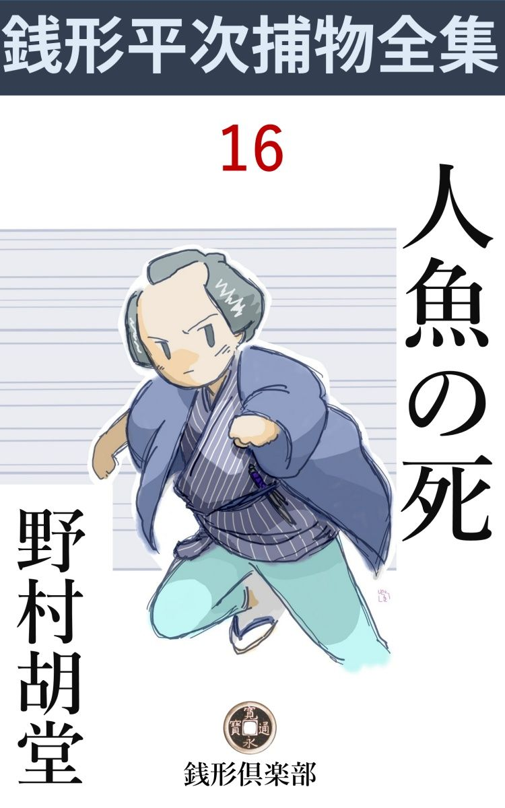
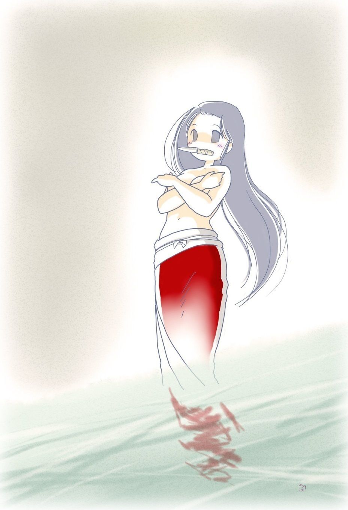

| 人魚の死: 銭形平次捕物全集第16話 (銭形倶楽部) | |
| 野村胡堂 | |
| ZENIGATA CLUB (2018) | |

一
「ガラッ八、俺をどこへ伴 れて行く積りなんだい」
「まア、黙って蹤 いてお出でなせえ。決して親分が後悔するようなものは、お目に掛けないから------」
「思 し召は有難いが、お前の案内じゃ、不気味で仕様がねえ。又丹波笹山で生捕りましたる、八尺の大鼬 なんかじゃあるまいネ」
捕物の名人銭形の平次と、その子分の八五郎、野暮用で亀戸へ行った帰り、東両国の見世物小屋へ入ったのは、初夏の陽も、漸く蔭を作りかけた申刻 （四時）近い刻限でした。
ガラッ八が案内したのは、讃州 志度 の海女 の見世物、竜王の明珠 を取った、王朝時代の伝説にかたどり、水中に芸をさせるのが当って、その頃江戸中の評判になった興行物の一つでした。
小屋は筵 張 りの全く間に合わせの代物 、泥絵の具で存分に刺激的に描いた、水中に悪竜と闘う美女の絵を看板に掲げ、その下の二つの木戸口には、塩辛声の大年増と、二十五六の巌乗な男が、左右に分れて客を呼んでおります。年増女は如何にも達弁にまくし立てますが、男の方は至って無口で------もっとも、兎 口 のせいもあったでしょう、木戸 札 を鳴らして、無暗に「入らっしゃい、入らっしゃい、サア、今が丁度宜いところ------」と言う言葉を、何の知恵もなく、こわれた機械のように繰り返しております。
「ガラッ八、俺にこんなものを見せる気かい」
平次はさすがに立ち止りました。この奇怪な空気に、少し当てられ気味でしょう、好い男の眉が、心持顰 みます。
「親分、だまされたと思って入って御覧なさい。そりゃ面白いから------」
ガラッ八は、平次の手を引くようにして、一歩、小屋の中へ入りました。
中は五六十坪、筵張りの見世物にしては広い方ですが、その真ん中に、十坪あまりの真四角な水槽 を据えて、少し不透明な水が満々と湛えてあります。今の言葉で言うプール、昔はそんな事を言いませんが、小屋の粗末なのに似ず、これだけは、まことに厳重です。
水槽の上が小さい舞台になって、その上に、お松、お村という二人の美女------これが一座の花形で、床几 に腰を掛け、紫の対 の小袖に、赤い帯を締め、お松は三味線を鳴らし、お村は篠笛 を吹いております。
どちらも十八九、どうかしたら二十 位でしょう。讃州志度から伴れて来た海 女 というにしては、恐ろしい美人です。お松はやや細っそりして上品な顔立、お村は脂の乗った豊艶な身体、どちらも、明眸 皓歯 、白粉っ気も何にもないのに五体から健康な魅力を発散するような美しさ、江戸中の見世物の人気をさらったと言うのも無理はありません。
舞台には、二人の美女の外に、麻 裃 を着た口上言いが一人、月 代 と鼻の下に青々と絵の具を塗って、尻下がりの丸い眉を描いておりますが、顔立は立派な方で、身のこなし、物言い、妙に職業的な軽捷 なところがあります。
水槽の前には、青竹を繞 らして、後ろへ次第に高くなった、急造の客席の上には、観客がかれこれ二三百人。
「ね、親分、この不景気に、十二文の木戸を払ってこれだけ入るんだから------」
ガラッ八は自分のことのように揉手 をしております。
「手前 のような人間が多勢いるんだね、世間は広いやな」
そう言いながらも、銭形の平次も、この一種異様な見世物に心を牽 かれないわけには行きませんでした。
お松、お村の二人の美女が暫く三味線と笛の合奏を続けながら、流行唄------少しも讃州らしい匂いのない、江戸の流行 唄 ------を二つ三つやると、やがて、達弁な口上の声につれて立ち上がりました。
「いよいよこれから竜王の珠取り、藤原の淡海公に契 った海女は一人だがこちらの海女は二人、いずれ劣らぬ美しいのが、水底深く潜って、竜王の明珠を取って来る。この水槽は、こう見えても、底は竜宮まで通じている------嘘だと思ったら、遠慮なく飛込んで見られるが宜い------」
そんな事を言って笑わせている間に、お松お村の二人の海女は、赤い帯を解いて、クルクルと裸体 になりました。
裸体に------というのは、文字通りの裸体です。明治大正になってからも、鳥羽の海女が幾度か東京へ米て、浅草公園や上野の博覧会で海中の作業を見せましたが、これは風俗上の問題から中形の浴衣か何かを着せて、真 当 の裸体は客に見せませんでしたが、銭形平次が活躍している頃の江戸には、そんな取締規則などはありません。東西両国にはもっといかがわしい見世物のあった頃、海女の裸体などを見て、驚くような敏感な人間はなかったのです。
海女と言っても、お松、お村は、室内の水槽で芸をするように育って、陽にも潮にも焼けず、小屋の空気が匂うばかりの白い肌を、何の惜気もなく衆目にさらして、水槽の縁に起ちました。緋 縮緬 の腰巻が一つ、その裾が風に煽 られるのを小股に挾んで、両手で乳を隠すと、丈なす黒髪が、襟から肩ヘサッと麾 きます。
小屋を埋むる客は、この刺激的な情景に動揺 みを打ちました。
「成程ガラッ八、こいつは手前 が夢中になりそうだ」
平次も少し引入れられ気味に、そんな事を言って、水槽の左右に立った美女の、素晴らしい姿態に眺め入りました。

二
やがて、口上言いの男が、二 た口 の短刀を持出して、お松、お村に一本ずつ渡しました。見たところ如何にもよく切れそうで、美女の裸身と、ひどく面白い対照になります。一つは短刀を受取るために、二人はどうしても乳房を隠した手を離さなければならなかったためでしょう。小屋一パイの客は、妙に興奮して、バラバラと気の揃わない手を拍っております。
やがて口上言いが、白扇 を開いて、
「いよいよ海女は水底深く潜って竜王の顎 を探ります。明珠は、お松、お村、どちらの手に入りましょうや、暫くは一と囃 し------」
と言うと、二人の海女は、身を跳らして、碧玉 を湛 えたような------少し底濁りのした水槽ヘサッと飛込みました。揚幕の中からは猛烈な囃しの音、特に銅鑼 を叩いている、五十恰好の親爺は、妙にソワソワした様子で、首だけ出して水槽を覗いております。これは一座の太夫元、木戸にいる大年増の亭主で藤六という男、無人の一座で、女房は木戸番を、亭主は下座 を勤めているのだと、後で判りました。
二人の海女は、暫く人魚のように、水槽の中を泳ぎ廻りました。一人が浮けば、一人が沈み、一人が拵え物の木彫の竜に近づけば、一人がそれを妨 げ、碧い水の中に、黒い髪、白い肌、紅 の腰巻が乱れ合って、これはなかなかの観物です。
「ネ、親分、こいつは面白いでしょう」
独り者のガラッ八は、すっかり夢中になって、この巧みな興行物のエロティシズムに酔いしれます。
水槽は十坪ほどの二つに仕切って、奥の四坪ほどのところ、水中にやや浅く木彫赤塗の竜を沈め、その深い口の端に金箔 を置いた宝珠を含んでおります。二人の海女が盛んに泳いでいるところと、竜を沈めたところの間には荒い格子の仕切りがあって、格子の底の方には、僅かに人間が潜れる穴が開いております。水は思いの外深いらしく------、いや深く見せるために、少し濁ったままにしてあるのでしょう、格子の底の穴のあたりは、朦朧 として、上からはよく判りません。
お松とお村は、暫く水中に争いましたが、やや肥ったお村の方が勝って、お松を弾き上げると、身を沈めて格子の穴を潜り、竜の顎 の珠を取って、勝ち誇った両手を水の上へ高く挙げました。右手には閃らめく短刀、左手には燦爛 たる珠。
小屋の中には、ドッと歓呼があがり、口上言いの男は、舞台の上を、道化 た様子で、ピョイピョイと跳び廻ります。
最後の観物 は、二人の娘が、すっかり濡れて、水から這い上がったところでした。海藻 のように雫 する黒髪、真珠のように輝く肌、そして、濡れた緋縮緬の腰巻が、娘の美しい曲線を包んで、若さと、艶かしさを発散する趣 は、まことに比類もありません。
「ネ、親分、面白いでしょう」
少し興奮した顔を撫でて、こんな事を言うガラッ八を顧 みて、
「馬鹿だね、十手が懐中から、ハミ出すじゃないか、少し顔の紐を締めて、外の風に当って見ろ」
平次はサッと木戸の外へ出ました。
「だって親分」
「だっても糸瓜 もあるものか、あの小屋の中には、妙に気に入らねえところがあるよ。兎に角、江戸っ子の見るものじゃねえ」
二人はそんな事を言いながら神田へ辿りました。
三
その翌る日、真昼 を少し廻った頃、平次の家へ、
「親分、た、大変」
ガラッ八が転げ込んで来ました。
「何だ、相変らず騒々しい」
「落着いていちゃいけねえ、親分、大変なことになっちゃったんだ」
「お前の大変には懲々 しているよ、その度 毎に泥足で飛上がったり、煙草盆を蹴飛ばしたりするんだから------」
そう言いながらも、二の句が継げないほど息を切らしているガラッ八を見ると、平次も少し緊張した心持になります。
「親分。今日のは現にあっしがこの眼で見て来たんだから嘘も偽 もねえ。あの両国の海女 が水槽へ飛込むと------」
「何だと------、又あの見世物へ行ったのか、馬鹿な奴だ。この間から変だ変だと思ったら、間がな隙がな抜け出しちゃ、木戸番へ十手の房か何かを見せびらかして、只であの海女を見ていたんだろう」
「そんな事はどうだって構やしない、親分、毎日行って見ているお蔭で、今日と言う今日は、飛んだものを見てしまったんだ。------海女が一人殺されたんですぜ」
「何だと、ガラッ八、もう少し詳しく話してみろ」
海女が殺されたと聞くと、職業意識が目覚めて、平次は急にシャンとなりました。
「それお出でなすった。親分がそう来なくちゃ話が出来ねえ」
「生意気な事を言わずに、海女の殺された話をしろ、無駄を抜きにして」
「------こうだ親分、今日もいつもの通り、巳刻 （十時）過ぎに小屋を開けたが、間もなく一パイさ、大した人気だね」
「それが無駄だよ」
「まア、黙って聞いて下さい。------いつもの通り芸題は運んで、昼少し前に、お松とお村が水槽に飛込む段取になった。口上言いから短刀を受取って、勢いよく飛込んだまではよかったが、お松が格子の下の穴を潜 って、木彫の竜の方へ抜ける時、どうしたか、サッと水が真赤になって、恐ろしい泡が浮くと、お松の身体は水の中でノタ打ち廻って、格子の下の穴に引っ掛っているんだ」
「フム......」
思いの外の物凄い話に、平次も釣り込まれて眼をすえました。
「その恐ろしかった事------、黒い髪が藻 のように揺れると、白い肌に絡 んだ赤い腰巻が、水の中でメラメラと燃えるように動いたぜ。時々お松の顔が上にネジ曲げられると、恐ろしい形相で何やらを睨んだが。あの顔は忘れようたって忘れられる顔じゃねえ」
「それからどうした」
「漸く穴を抜けて竜の側へ浮いたが、力が尽きたか、直ぐ沈んだ。水槽の水は見る見る真っ赤だ」
「もう一人のお村は？」
「格子の手前へ、ボンヤリ浮いたが、手にはまだ短刀を握っていた。一と目、お松のもがき苦しむ様子を見ると、追っ駆けられるように水槽の縁へ這い上がり、舞台へ転げ上がると、そのまま目を廻してしまったが、赤い雫 が垂れそうで、一時はこの女も斬られたかと思った------」
「それからどうした」
「口上言いの男が着のみ着のままで飛込んで、下からお松の身体を抱き上げると銅鑼 を叩いていた男が上から手を出して引上げた------が、もういけねえ、虫の息さ」
「傷は------」
「胸から腹へかけて、真一文字に割かれていた、その物凄かった事」
「何か物を言ったか」
「何も言わねえ。傷は深いし、水は呑んでいたし、引揚げると、唇 を二三度動かしたっきり、息が絶えた」
「------」
「ネ、親分、あっしは、あんな物凄いものを見たことがねえ。見物は逃げ出す、女子供は泣き叫ぶ、いやもう地獄のような騒ぎだ。一応十手を見せて、太夫元に木戸を閉めさせ、一座の者の足留めをして、ここまで飛んで来たんだが、親分すぐ行って下さるでしょうね」
「馬鹿野郎」
「ヘエ」
「お前は一体何だ」
「ヘエ、------これでも人間------」
「馬鹿ッ、人間の端くれは判っているが、ツイこの間お札 を頂いて、それでも一本立の御用聞になったばかりじゃないか」
「ヘエ」
「ヘエじゃないよ、十手捕縄を預かる立派な御用聞が、殺しの現場を見て、驚いて飛んで来る奴があるか」
「------」
「平次の子分の八五郎は、血を見て腰を抜かして、親分のところに飛んで行ったと言われちゃ、お前 ばかりの恥じゃない、第一、そこを空っぽにして飛んで来て、下手人が逃げ出しでもしたら何とするんだ」
「へエ------」
「もう一度両国へ引返しな。俺は一切構わないから、お前一人で眼鼻をつけて、下手人を挙げて来い、馬鹿野郎」
平次の以ての外の気色 に、ガラッ八はすっかり面喰らってしまいました。
「そう言われると面目次第もねえ、だがネ親分、あっしは腰を抜かしたわけじゃねえ。あっしの力には及びそうもなかったし、一つは親分の手柄にさして上げたかったんだ」
「馬鹿野郎、お前なんぞに手柄を譲って貰いたくはねえ、トットと引返しゃあがれ」
「帰りますよ、何も、馬鹿野郎、馬鹿野郎ッて言わなくたっていいでしょう、こう見えたって------」
「その積りで下手人を捕 えて来い、殺しの現場を見て、指を銜 えて引下がる奴があるものか」
「------」
ガラッ八は黙って飛出しました。こう言われると、義理にも下手人を縛って来なければ、世間へも親分へも顔向けがなりません。
四
「誰も外へ出た者はあるめえな」
「ヘエ」
太夫元の藤六は、米 櫃 のお松に死なれた上、うんと儲かっていた小屋にケチが付くのを心配して、すっかり萎 れ返っております。
幸か不幸か、まだ検屍の役人は来ず、この辺を縄張にしている石原の利助も、他行 中 とあってまだ駆けつけません。
ガラッ八の八五郎は、出来るだけ威儀を整えて、新米の御用聞に許される範囲で、一と通り調べ上げて見ました。
太夫元の藤六夫婦は相模 のもの、小才の利いた番頭の清次の入知恵で、水心のある美女を二人雇い入れ、讃州志度の海女という触れ込みで、この見世物を始めたのでした。
清次と言うのは、口上言いの男で、元は三崎の漁師 で、少し位は文字も読め、才知も逞 しく、こんな道化た様子をしておりますが、顔を洗って、胡粉 を落したところを見ると、なかなか好い男であります。
お松とお村はどちらも相模女、二人共負けず劣らず美しくもあり、負けず劣らず浮気でもあり、近頃は、土地の遊び人で、原庭の才三というのに熱くなって、女だてらに、鞘当 をしていると言う噂もありました。
その他は、江戸で臨時に雇入れた囃方 と、木戸番の兎口 の百松だけ、これも相模生れのお松と同郷で、お松には充分気があるようですが、至って無口な上、自分の顔の醜 いことを百も承知をしておりますから、若い女と口をきくのさえ遠慮しているような肌合の男だったのです。
こう調べるまでもありません。お松が死んだ時、水中にいたのはお村だけ、それも竜の彫刻 に通う入口を争いながら水槽の深みの中に、短刀を握ってスレスレにいたのですから、お村より外に、お松を殺せる条件を握っている者は一人もありません。
こんな工合で、平次がわざと避けて、この事件から手を引いたのは、ガラッ八でも立派に解決が出来ると思ったせいでしょう。
ガラッ八が袂の中の捕縄を爪探 っていると、恰度 、石原の利助がやって来てくれました。近頃はすっかり角を折って、平次は勿 論 、ガラッ八にも厭な顔を見せない利助は、一伍 一什 の様子を聞くと、一も二もなくガラッ八の意見に賛成してしまいました。
「そいつは、考えることも、迷うこともあるものか、お村とか言う女を縛って、兎も角八丁堀の旦那に引っ叩いて貰うんだ」
その場を去らせず、こうしてお村は縛られてしまったのです。
しかし、これが大変な聞違いだったことは、三日も経たないうちに解りました。お村はどんなに責められても、お松を殺したとは言わないばかりでなく、考えれば考えるほど、事件があやしくなって来たのです。
第一お村の持っていた短刀は、切れそうには見えるが刃 退 きで、女の手で人間一人殺せるほどの業 をしそうにもなく、お松の傷は、胸から腹へかけて、真一文字に割 かれたもので、刃退の短刀や、女の手などでは、とてもそんなに斬れる道理はありません。
第二が、お松とお村が水中に争う型にはなりましたが、それは振付のある極った形で、何の無理も不思議もなく、お松が斬られたのはお村の方が上へ浮いている時で、お松の腹の方へ手が届く筈もありません。
何百人の眼が見ていたのですから、これは少しの間違いもないことで、お村の無罪は火を見るよりも明かです。どうかしたら、お村は短刀を二本用意していて、よく切れる方を、どこかへ捨てたと考えられたいことはありませんが、お村は水槽 から這い上がると、裸体のままで眼を廻したのですから、そんな物を持っていなかったことは明かで、水槽はその日のうちに血潮の交った水を流して、塩磨きにして洗い清めたのですから、もう一本の短刀を水中へ捨てて来なかった事も明かです。
吟味与力、笹野新三郎も、これではお村を下手人として、奉行所のお白洲へ突出されません。ひどく落胆する利助とガラッ八を叱って、兎に角、一応お村を許して帰しました。
それが事件のあってから三日目です。
五
「親分、かくの通りだ。何とも面目次第もないが、知恵を貸して下さい。あっしが恥を掻く位は何でもないが、笹野様もことの外の御心配の様子だし、石原の親分も、緑町の藤六の家で、どんな事をしても、親分を伴れて来るようにって、首を長くして待っていなさる------」
ガラッ八にそうまで言われると、平次もこの上動かずにいるわけには行きません。
「それはむずかしそうだ。俺が行ったところでどうにもなるまいが、兎に角、顔だけでも出して来よう」
そう言いながら、神田から緑町へ、ガラッ八と一緒にやって来ました。
緑町の藤六の家というのは、一種の合宿所で、太夫元の藤六夫婦を始め、一座のお村、番頭の清次、木戸番の百松、それに、死んだお松が一緒に、小女を使って暮している家でした。
「銭形の親分、お待ち申しておりました。よくお出で下さいました」
藤六は外 らさない顔で奥へ案内すると、
「おお、銭形の、待っていたよ」
石原の利助も、ホッとした様子で迎えてくれます。
平次はガラッ八の口や、世上の噂で、大体の経緯 は知っておりますが、念のために、藤六や清次の口から、もう一度、人と人との関係や、その日の朝からの細かい出来事や、いろいろ訊ねました。
「木戸番の百松------とか言うのが、殺されたお松に気があったとか言うのは本当ですかい」
「それはもう、百松とお松は三崎の生れで、子供の時から知っているそうですし、百松は心の底からお松を慕っていたようですが、お松の方では何とも思ってはいなかったでしょう。女の眼から見れば、そんな事はいくら隠してもよく解りますよ」
藤六の女房は、平次の問 にこう答えます。
「ところで、その水槽へ飛込む時、誰が珠を取るか、前から決っていただろうか、それとも行き当りばったりに、最初に穴を潜った者が取ることになっていたのか」
平次の問は次第に核心 にふれます。
「それは前から決っています。そうでないと、水へ入ってからマゴマゴして間違いを起しますから」
とこれは太夫元の藤六です。
「あの間違いのあった日は、蓋 をあけて、すぐだったと言うから、お松が珠を取ることは前から、解っていたわけだね」
「左様で御座います。最初はお松、次はお村、三度目はお松------とこれは毎日同じことで、朝の第一番に珠を取るのは、一つ年上のお松に決まっております」
「ところで、今晩は百松とお村が見えないようだが------」
平次はフト思い付いたように、四方 を眺めました。
「百松は毎晩小屋へ泊っています。ろくなものもありませんが、火の用心のためで」
と清次。
「お村は？」
「お村はどこへ行ったろう。疲 れているからって、奥で休んでいた筈だが、夕方から見えないようだね」
これは藤六です。
「お村さんは、先刻百松さんと一緒に両国の方へ行きましたよ」
お饒舌 らしい小女は、お勝手の方から口を出しました。
「何？ 百松と一緒に行った。おかしいなア、お役所から帰されたばかりで、疲れ切っているから、暫く休みたいって言っていたくせに」 。
「お村さんは厭がっていましたよ、明日にしてくれって、------すると百松さんは怖い顔をして、グングン引っ張って、両国の方へ行ってしまいましたよ」
小女のいうことは、銭形平次を一番驚かしました。
「それは大変だ。ことによると、間に合わないかも知れない」
サッと起ち上がると、
「どうしたんです、親分」
と続いて、藤六、ガラッ八、清次------。
「お村の命が危ない、皆んなも後から来てくれ」
言い捨てて夕闇 の中へ、平次の姿はサッと消え込んでしまいました。
六
「お村、俺の言うことが解るか------解るなら、返事をしろ」
兎口 の百松は、見世物小屋の舞台に、蠟燭 を取って立ち上がりました。
前には、後ろ手に縛られた女、言うまでもなくそれは、今日お松殺しの疑いが晴れて、役所から帰されたばかりのお村です。
「ハッ、ハッ、ハッハッ、成程、猿轡 を噛ませていたんだっけ、それでは返事も出来まい------なアに返事なんかどうでも宜い。俺の言う事が解ったら、首をしゃくりゃそれで宜いんだ」
空洞 な笑いが、ガランとした小屋に響いて、その物凄さと言うものはありません。乱れた髪の上から、猿轡を食 まされ舞台の上に引据えられて、紅 の裳 を乱したお村は、顔を変えてゾッと身 顫 いしたようです。
百松は、万筋 の単衣を端折って、舞台の上に跼 みました。蠟燭をかかげると、縛られたお村の顔よりは、自分の醜 怪 な顔の方が、灯りの真ん中ヘヌッと出ます。
「お村、お前はお松を殺したに違いあるまい。うんにゃ、隠したって駄目だ。お上の眼を晦 ませても俺の眼は誤魔化 せねえ。あの水の中で、鮭 のように腹を裂かれて死んだお松だ、一緒に水槽に浸 っていたお前が殺さなくて、誰が殺すんだ」
「------」
「お前も知ってるだろう。お松と俺は、同じ村に生れて、餓鬼 のうちからの友達だ。大きくなったら一緒にって、田圃の積 藁 の蔭で、飯事 をしながら約束したこともあるが、大きくなると、お松の阿魔、俺の見っともないのを嫌って逃げ出しゃあがった」
「------」
「俺はそれを迫っ駆けて、二年越江戸中を探し廻り、漸くここにいることが解ったんだ。どうせ、俺はこの通り見っともねえ人間だ、お松のような綺麗な娘に好かれる道理はねえから、浮気も不身持も承知、決して不服も、焼餅も言わないから、その代り、一生側へ置いてくれ、俺はお前の美しい顔を眺めて、犬のように守ってやる------つてこう言ったんだ。俺のやった事を、男の恥だって言う者もあるだろうが、俺の身になると、外に工夫も手段 もねえ、俺はどんな目に逢っても、どんな事をされても、お松の側にいたかったんだ------」
醜怪 な百松の眼からは、ポロポロと涙が、拳骨 を伝わって舞台の板を濡らします。お村は黙って眼ばかり光らせました。生捕られた獣のように、隙もあらば逃げようとしながらも、この男の恐ろしい熱情的な物語に、女らしい好奇心は十分に動かしているようです。
「そのお松を殺したお前を、どんな目に逢わせて敵を討とうか、俺は三日三晩考えた、なア、お村」
「------」
「もう少しの辛抱だ、騒ぐなよ」
立ち上がると、お村を縛った縄を解いて、その儘逃げ出そうとするのを、膝の下へ引据えて、引き毮 るように、帯を解いて、着物を脱がせてしまいました。
「------」
あれッとも言えません。猿轡 をはめられて、虫の如く蠢 めくお村の裸体。あの水槽の中に飛込む時と同じ、赤い腰巻のままを、もう一度キリキリと縛り上げ、かねて用意したらしい石の重りをつけると、
「この中で存分にもがけ、お松の弔 いだ、俺はお前が死ぬまで見物してやる」
サッとお村の身体を、水槽の中へ投込むと、一度床の上に立てた蠟 燭 を取って、頭の上へ高々とかかげました。
水は今日入れ代えたばかり、碧玉 の如く澄んで、蠟燭の光に底まで読めます。その中をお村の裸体は、重りに引きずられて、ユラユラと沈んで行きます。
お村は必死と身をもがきますが、何の甲斐もありません。海藻 をかき乱したような黒髪の、水肌を慕うように揺 めく中に、白い顔が恐怖と苦悩に歪んで、二つの眼ばかりが、星の如く輝きます。
くねくねともがく身体、それに絡 まる緋 縮緬 、水に射す灯を受けて、なんと言う恐ろしい見物でしょう。
「ヘッ、ヘッ、いくら海女 が商売でも、こう半刻も置かれちゃ叶わねえだろう」
乾 び切った笑いが、又ヘラヘラと小屋の天井に響いて四方へ鬼気を撒き散らします。
七
そこへ平次が飛込みました。半狂人のようになった百松を取って投げると、着物を脱ぐ間もなく飛込みましたが、お村を助け上げると間もなく、上から、百松が手当り次第、棒、箱、小道具を投げつけます。
「えッ、何をする」
と言ったが、手の付けようがありません。幸いそこへ、ガラッ八、利助を始め、藤六も清次も駆けつけ、百松を取って押えて、水の中から平次とお村を引上げました。
平次は元より無事、お村も水には馴れておりますから、幸いまだ命には別条ありません。
この騒ぎが一と片つきますと、ありったけの蠟燭 を灯 して、舞台の上へ円くなった人達が期せずして平次に問いかけました。
「お村に聞くと、百松はお松の敵を打つつもりだった様ですから、百松がお松殺しの下手人のようでもありません。一休誰がお松を殺したんでしょう」
太夫元の藤六は、少し長い顔を引延 して、皆んなの顔を代表します。
「俺にも解らない」
「へエ------」
平次の予想外の答えに、みんな呆気 に取られてしまいました。
「この水槽の水を出してしまったら、何か嗅ぎ出せるかも知れないが」
「宜しゅう御座います、銭形の親分、どうぞ御自由に水をお抜き下すって------」
藤六は、そう言いながら、ガラッ八に手伝って貰って、三重になっている、水槽の樋 を開きました。
水は恐ろしい音を立てて、下水から大川に落ちる様子。
半刻ばかり経つと、水槽の底がすっかり見えるようになります。
「もう宜いだろう、利助兄イ、すまないが、ここから逃げ出そうとする者があったら、誰でも構わず引っくくってくれ」
「よし、心得た」
「それから蠟燭を------」
平次は蠟燭を片手に、木彫 の竜の側にある段々を踏みました。
「お松を殺した刃物は、ここにある筈だ、もしここに何にもなかったら、お松は水の中で鎌 鼬 に逢ったとでも思わなきゃアなるまい」
平次はそう言って。竜の口ヘ手を差し入れました。顎 の大さい牙 の間には箔 を置いた珠を挾んでありましたが、竜の身体はどうせ一本の木へ刻 んだのではなく、板を集めて寄木 にしたもので、口から腕を入れると、狭いながら、胴までその手が入って行きます。
「あったあった」
固唾 を呑む人々の前へ、鞘 も柄 もない、小型の匕首が一 と口 、妙に薄曇って物凄く光ります。
「柄を外して中身だけ抜いて使ったのは悧巧だ。------この通り、水の中に三日入っていても、人を一人殺した刃物は血曇 がある、刃退きのピカピカする短刀とは違う」
平次は独り言のように言いながら、水槽の中の段を踏んで、底に降り立ちました。
「矢張り思った通りだ」
「------」
大勢の首が、水糟の中を覗くと、下から平次は、
「格子の潜りの下に、短刀を立てる穴が穿 ってある------、この通り」
蠟燭をかかげて身を開くと、上からも手に取る如く見えます。水槽を二つに仕切った格子の潜りの真下に、幅二分、長さ七八分、丁度短刀のなかごを逆に立てるほどの、真新しい穴があいているのです。
平次は竜の口から取った匕首 のこみをその穴にはめると、匕首は丁度床に植えたように、物凄い刃先を上にしてピタリと樹 ちます。
「あッ」
上から覗いている者の口々に、恐ろしい感歎の声。
「そこで下手人は誰だ------」
と石原の利助、鋭い眼でジロリと見廻しますが、百松の外には、そんな事をしそうな人間は一人もありません。
平次はこの試験をおわると、大急ぎで水槽から這い上がりながらこんな事を言います。
「二人の内の一人だ」
「誰と誰？」
と利助。
「お松を水槽から引揚げる時、床 に植えた短刀を抜いて、竜の口ヘ投り込んだのだ」
「すると」
「藤六か、清次」
「えツ」
「藤六は自分の米 櫃 を殺す筈はない」
「それでは？」
そこまで解るうち清次は待っていませんでした。隙を見てヒラリと舞台から飛降りると、宵の闇へ。
「待て野郎ッ」
不意に、木戸に隠れていたガラッ八、飛出そうとする清次の後ろから、無手 と組み付きました。
先刻水槽に入る時、平次は眼配せ一つで、ガラッ八をここへ廻して置いたのでした。
「さすがは銭形の親分だ、親分が行って下さらなきゃア、もう少しで飛んでもない事になるところだった」
述懐するともなくガラッ八。
「まア、そう言うな。今晩の下手人を捕えたのは、お前の腕っ節じゃないか」
平次はこの忠実な子分の肩を叩きました。
「そう言ってくれるのは有難いが、どう自惚 れたって、あっしの手柄とは思えねえ、------ところで親分、清次が何んだってお松を殺したんでしょう」
「お松は名題の浮気者だ。清次と夫婦約束までしたのに、近頃お村と張合って、原庭 の才三という色師に熱くなっているからよ。同じようにお松に気があっても、清次は百松のように諦らめられなかったんだ」
（編注）
作品中には、身体の障害や人権にかかわる、差別的な語句や表現が見られますが、本書が成立した当時の時代背景等が現代とは異なる古典的な文学作品でもあり、著者が故人でもありますので、底本のままとしました。ご理解、ご諒承のほどをお願い申し上げます。
著者---野村胡堂
挿絵---萩 柚月 © 2017
初出---「文藝春秋オール讀物號」昭和七年七月号 文藝春秋社
底本---「錢形平次捕物全集」第一巻 河出書房 昭和三十一年五月五日初版
編集・発行 銭形倶楽部